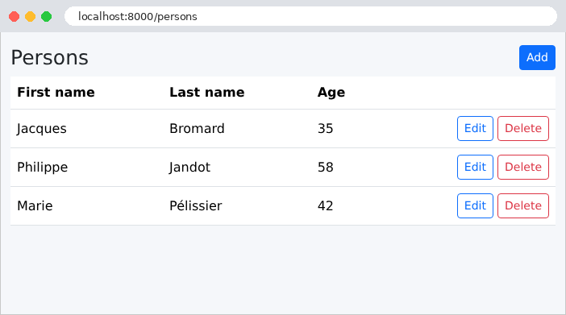
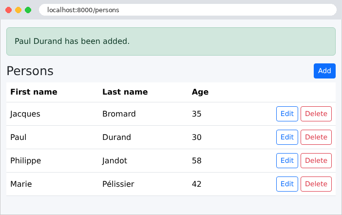
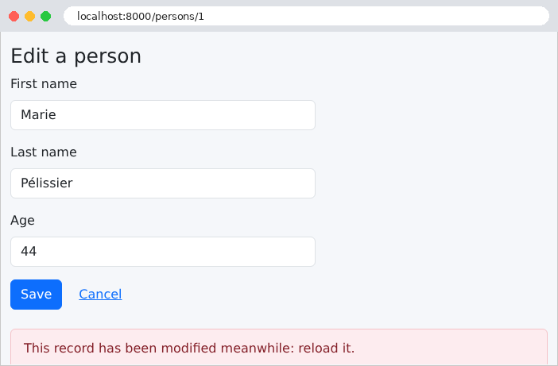
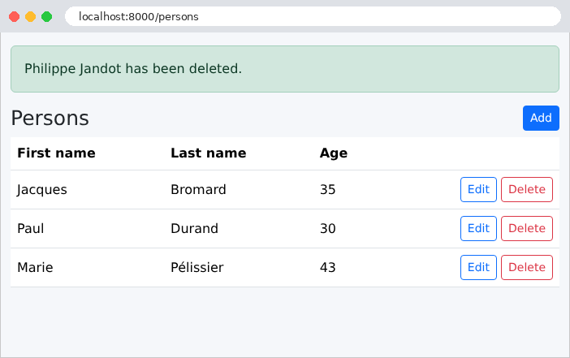

9. Schichtenarchitektur und Datenzugriff
Die bisherigen Beispiele hielten ihre Daten im Speicher. Eine echte Anwendung speichert sie in einer Datenbank und ist in Schichten organisiert (siehe das Diagramm in der Einleitung):
- die Web-Schicht (Views, Formulare, Templates): liest den Request, ruft die Geschäftsschicht auf, wählt das Template aus;
- die Geschäftsschicht: die Geschäftsregeln;
- die DAO-Schicht (Data Access Object): die Datenbankabfragen.
Jede Schicht kennt nur die darunterliegende Schicht und möglichst wenige Details über sie: Die Web-Schicht kennt die Abfragen nicht, und die Geschäftsschicht kennt das HTML nicht. Diese Trennung macht jede Schicht leichter verständlich, testbar und weiterentwickelbar. Beispiel 28 wendet das auf die Verwaltung einer Personenliste an: Es ist, in kleinerem Maßstab, die Verwaltung der Ärzte und Clients aus der Fallstudie.
In [Python] ist der Datenbankzugriff in mehreren Schichten organisiert:
- Der Standard DB-API 2.0 (PEP 249) von [Python] definiert eine gemeinsame Schnittstelle für alle DBMS: eine Verbindung öffnen, einen Cursor erhalten, einen SQL-Befehl ausführen und Zeilen lesen. Jedes DBMS hat seinen eigenen Treiber: Für [MySQL] (und [MariaDB]) empfiehlt [Django] die Bibliothek [mysqlclient], die in C geschrieben ist und durch die Beispieldatei [requirements.txt] installiert wird;
- Der ORM (Object-Relational Mapper) von [Django] bildet Klassen (Modelle) auf Datenbanktabellen ab und wandelt die gelesenen Zeilen in Objekte um. Er verwaltet Verbindungen und Transaktionen, erzeugt die SQL-Befehle selbst – angepasst an das jeweilige DBMS – und übersetzt die Fehler jedes Treibers in gemeinsame Exceptions (eine Verletzung einer Eindeutigkeitsbedingung wird unabhängig vom DBMS zu einer [IntegrityError]). Er folgt dem sogenannten Active-Record-Muster: Jedes Objekt weiß, wie es sich selbst speichert ([person.save()]) und löscht ([person.delete()]), und jede Klasse hat einen Manager ([Person.objects]), über den Abfragen gesendet werden. Das ist das Modell von [Eloquent], dem ORM von [Laravel]; [Doctrine], der ORM, der aus [Symfony] hervorgegangen ist, folgt dagegen dem Data-Mapper-Muster, bei dem ein separates Objekt die Entitäten liest und speichert.
Der aus [Django] stammende ORM ist Teil von [Django] und eine seiner Schlüsselkomponenten: Die Administrationsoberfläche, die Authentifizierungsanwendung, die Datenbank-Sessions und die generischen Views stützen sich alle darauf. Er entspricht [JPA] und [Hibernate] in [Java], [Entity Framework Core] in [C#] oder [SQLAlchemy] (zusammen mit [Flask] verwendet) in [Python]. Beachten Sie eine Folge der Arbeitsweise von [Django]: Standardmäßig öffnet jeder Request seine eigene Verbindung zur Datenbank (bei seiner ersten SQL-Abfrage) und schließt sie am Ende (beim Signal [request_finished], Beispiel 24). Die Einstellung [CONN_MAX_AGE] erlaubt es, Verbindungen von einem Request zum nächsten offen zu halten (persistente Verbindungen), und [Django] 5.1 hat einen echten Verbindungspool für [PostgreSQL] hinzugefügt. Das Öffnen einer Verbindung zu [MySQL] auf demselben Rechner dauert nur wenige Millisekunden.
Dieses Beispiel setzt einen laufenden Server [MySQL] 8.4 oder höher voraus (oder [MariaDB] 10.11 oder höher; die Mindestversionen gelten für [Django] 6.1): Der Anhang erklärt, wie Sie mit [Laragon] einen installieren.
9.1. Beispiel 28: Eine dreischichtige Personalverwaltung
9.1.1. Die Datenbank
Die Datenbank [dbpersons] wird durch das SQL-Skript erstellt. Mit [Laragon] können Sie es beispielsweise im Werkzeug [HeidiSQL] ausführen (Menü Datei / SQL-Datei ausführen) oder über die Befehlszeile aus dem Beispielordner:
Die Datei [database/dbpersons.sql]:
- Zeile 3: Das Skript ist in [UTF-8] geschrieben; das wird dem Server mitgeteilt, damit die Akzente in den Daten ([Pélissier]) erhalten bleiben;
- Zeile 5: Der Zeichensatz [utf8mb4] akzeptiert alle Zeichen (Akzente, Emojis usw.). Die Kollation [utf8mb4_unicode_ci] vergleicht Zeichenfolgen, ohne zwischen Groß- und Kleinbuchstaben oder Akzenten zu unterscheiden: Für [MySQL] sind [pelissier] und [Pélissier] gleich;
- Zeile 11: eine Versionsnummer, die bei jeder Änderung der Zeile erhöht wird (siehe „optimistisches Sperren“ weiter unten);
- Zeile 17: eine benannte Eindeutigkeitsbedingung: Die Datenbank erlaubt keine zwei Personen mit demselben Vor- und Nachnamen.
[Django] kann die Tabellen auch selbst anhand der Modelle mithilfe von Migrationen erstellen: [Python]-Dateien, die Schritt für Schritt die Erstellung und die Änderungen jeder Tabelle beschreiben. Der Befehl [python manage.py makemigrations] schreibt diese Dateien, indem er die Modelle mit dem von den früheren Migrationen beschriebenen Zustand vergleicht; [python manage.py migrate] wendet sie auf die Datenbank an. Das ist die übliche Arbeitsweise mit [Django]. Wir pflegen ein SQL-Skript, das allen Versionen der Fallstudie gemeinsam ist und genau zeigt, was die Datenbank enthält. Umgekehrt schreibt der Befehl [python manage.py inspectdb] die Modelle für eine bestehende Datenbank: ein guter Ausgangspunkt, den man aber durchsehen sollte.
9.1.2. Die Konfiguration: config/settings.py
- Zeilen 21–26: die Middleware aus Beispiel 21: Anti-CSRF-Schutz, Flash-Meldungen und die Simulation der Methoden PUT und DELETE (die Datei [config/middleware.py] ist die aus Beispiel 21);
- Zeilen 32–42: Die Konfiguration [DATABASES] beschreibt die Datenbanken der Anwendung: hier nur eine, die Datenbank [default]. [ENGINE] bezeichnet die Engine von [Django] für [MySQL] (die den Treiber [mysqlclient] verwendet); es folgen der Datenbankname, der Benutzername und das Passwort (bei den Einstellungen von [Laragon] leer gelassen: Hat Ihr Server ein Passwort, tragen Sie es hier ein), der Hostname und der Port. [OPTIONS] übergibt dem Treiber den Zeichensatz für die Kommunikation mit dem Server – den Zeichensatz der Datenbank;
- Zeilen 44–55: die Templates, mit [APP_DIRS] für die Formular-Templates (Beispiel 18) und den Kontextprozessor für Meldungen (Beispiel 20);
- Zeilen 67–74: Die Einstellung [LOGGING] konfiguriert das Logging von [Python] (das Modul [logging]), das [Django] für seine Meldungen verwendet. Sie folgt dem Format des Moduls [logging.config]: Ziele ([handlers]: hier die Konsole über einen [StreamHandler], der in die Fehlerausgabe schreibt) und Logger ([loggers]), die über ihre Namen identifiziert werden. Der Logger [django.db.backends] erhält, nur im Debug-Modus, jeden an die Datenbank gesendeten SQL-Befehl samt seiner Dauer: Wir leiten ihn auf der Stufe [DEBUG] (der detailliertesten) an die Konsole weiter. [disable_existing_loggers: False] behält die Logger bei, die [Django] selbst konfiguriert.
Mehr ist nicht zu konfigurieren: Die Module der drei Schichten importieren einander (die Web-Schicht importiert die Geschäftsschicht, die wiederum die DAO-Schicht importiert), und die ORM-Schicht baut die Verbindung zur Datenbank selbst auf, wenn sie sie braucht.
9.1.3. Das Modell Person: persons/models.py
Die Datei heißt [models.py]: Dort sucht [Django] nach den Modellen einer in [INSTALLED_APPS] deklarierten Anwendung.
- Zeile 8: Ein Modell ist eine Klasse, die von [models.Model] erbt;
- Zeile 10: der Primärschlüssel, der von der Datenbank erzeugt wird ([AutoField]: das [AUTO_INCREMENT] von [MySQL]). [Django] würde ihn automatisch hinzufügen, wenn er nicht deklariert wäre (ein Feld [id] des Typs, der durch die Einstellung [DEFAULT_AUTO_FIELD] gewählt wird); wir nehmen ihn hier der Deutlichkeit halber auf. Er ist gleich [None] , solange das Objekt nicht eingefügt wurde;
- Zeile 12: die Versionsnummer der Zeile. Der ORM von [Django] hat kein eingebautes optimistisches Sperren: Es wird von der DAO-Schicht umgesetzt (siehe unten);
- Zeilen 14–16: die Spalten. Jedes Klassenattribut, das ein Feld des Modells ist ([models.XxxField]), entspricht der gleichnamigen Spalte; der Spaltentyp wird aus dem Feldtyp abgeleitet ([CharField]: [VARCHAR] der Länge [max_length]; [IntegerField]: [INT]). Wie in einem Formular (Beispiel 08) werden die Felder als Attribute der Klasse deklariert, es sind aber nicht dieselben Felder: Die aus [django.db.models] beschreiben Spalten, die aus [django.forms] beschreiben Formularfelder;
- Zeilen 19–25: Die innere Klasse [Meta] liefert Informationen über das Modell selbst. [db_table]: der Tabellenname (andernfalls würde [Django] den Namen der Anwendung gefolgt vom Namen des Modells nehmen, [persons_person]). [managed = False]: Die Tabelle existiert bereits, und [Django] verwaltet sie nicht: [makemigrations] erzeugt dafür keine Migrationen zur Erstellung oder Änderung. [ordering]: die Reihenfolge der Zeilen, wenn eine Abfrage keine angibt;
- Zeilen 28–29: Die Methode [__str__] (Beispiel 12) liefert den Text, der das Objekt darstellt: [str(p)] oder [{p}] in einem f-String liefert [Marie Pélissier].
Ein Modell ist eine gewöhnliche Klasse, der man Methoden und Properties hinzufügen kann. Der ORM befüllt dagegen die Attribute anhand der gelesenen Zeilen und erzeugt die SQL-Befehle aus den Attributen.
9.1.4. Die DAO-Schicht: persons/dao.py
Die DAO-Schicht enthält nur Abfragen, keine Geschäftsregeln. Jede Funktion beginnt mit [Person.objects], dem Manager des Modells, von dem alle Abfragen ausgehen.
- Zeilen 11–12: [all()] liefert ein [QuerySet]: ein Objekt, das eine Abfrage beschreibt, ohne sie auszuführen. Die Abfrage wird erst dann an die Datenbank gesendet, wenn ihre Ergebnisse benötigt werden (hier, wenn [list] sie durchläuft): Man sagt, ein [QuerySet] sei lazy. Es lässt sich daher vor der Ausführung weiter verfeinern ([filter], [exclude], [order_by] ...), wobei jede Methode ein neues [QuerySet] liefert. Die Reihenfolge ist die von [Meta.ordering];
- Zeilen 16–17: [filter(id=id)] fügt die Bedingung [WHERE id = ...] hinzu; [first()] führt die Abfrage aus, begrenzt auf eine Zeile ([LIMIT 1]), und liefert das erste Objekt oder [None]. ([Person.objects.get(id=id)] würde das Objekt liefern, aber die Exception [Person.DoesNotExist] auslösen, wenn es nicht existierte, und die Abkürzung [get_object_or_404], Beispiel 03, würde einen 404-Fehler liefern);
- Zeilen 22–23: Mehrere Bedingungen in [filter] werden durch [AND] verknüpft; [exclude] fügt eine Bedingung [NOT] hinzu. Die benannten Parameter beziehen sich auf die Felder ([first_name=...]); Suffixe legen den Vergleich fest: [age__gte=18] ([>=]), [last_name__startswith="P"], [last_name__iexact=...] (ohne Beachtung der Groß- und Kleinschreibung) ... Die Werte werden getrennt an die Datenbank übermittelt und niemals in den Text des SQL-Befehls kopiert, was eine SQL-Injection unmöglich macht;
- Zeilen 27–28: [create] erstellt das Objekt und speichert es ([INSERT]); nach dem Einfügen legt der ORM die von der Datenbank erzeugte ID im Objekt ab. Das ist gleichbedeutend mit [p = Person(first_name=..., ...)] gefolgt von [p.save()];
- Zeilen 35–38: die Aktualisierung, mit ihrem optimistischen Sperren. [update] aktualisiert alle vom [QuerySet] bezeichneten Zeilen in einer einzigen Operation mit einem einzigen [UPDATE]-Befehl und liefert die Anzahl der aktualisierten Zeilen. Der Filter hat zwei Bedingungen: die ID und die gelesene Version. Hat in der Zwischenzeit ein anderer Request die Zeile geändert – sodass sich ihre Version geändert hat –, ändert [UPDATE] keine Zeile, und die Funktion liefert [False]. Das ist das Prinzip des optimistischen Sperrens: Nichts wird gesperrt, aber gleichzeitige Änderungen werden erkannt. Der Ausdruck [F("version") + 1] bezieht sich auf die Spalte selbst, im SQL-Befehl ([version = version + 1]): Die Berechnung wird von der Datenbank durchgeführt, nicht in [Python] auf Grundlage eines zuvor gelesenen Werts;
- Zeilen 42–43: das Löschen: [delete()] sendet den Befehl [DELETE] für die Zeile des Objekts.
Anders als [Doctrine] besitzt der ORM von [Django] keinen Manager, der jedes gelesene Objekt mit seinem ursprünglichen Zustand vergleicht, um nur die geänderten Spalten zu speichern: [save()] schreibt alle Spalten des Objekts neu (oder die seines Parameters [update_fields]). Das ist einfacher und besser vorhersagbar; [update] erlaubt es, genau den gewünschten SQL-Befehl zu schreiben.
9.1.5. Die Geschäftsschicht: persons/business.py
- Zeilen 12–14: Meldungen der Geschäftsregeln;
- Zeilen 18–19: eine Exception-Klasse, die für die Geschäftsschicht spezifisch ist: Eine Geschäftsregel lehnt die Operation ab, und die Meldung der Exception ist für den Benutzer bestimmt. Sie erbt von [Exception] und fügt nichts hinzu; nur ihr Name zählt;
- Zeilen 23–27: die Daten einer Person, wie sie von der Web-Schicht an die Geschäftsschicht übergeben werden: ein einfaches Objekt, unabhängig von [Django];
- Zeilen 34–38: Eine nicht existierende Person ist ein Geschäftsfehler;
- Zeilen 44–52: Regel Nr. 1: Keine zwei Personen dürfen denselben Vor- und Nachnamen haben. Die Regel wird vor dem Schreiben in die Datenbank geprüft, und bei Verstoß wird eine [BusinessError]-Exception ausgelöst. Diese Prüfung genügt aber nicht: Zwei gleichzeitige Requests könnten beide feststellen, dass es keinen Namensvetter gibt, und dann beide das Einfügen durchführen. Die Eindeutigkeitsbedingung der Datenbank weist dann das zweite [INSERT] ab, und der ORM löst eine [IntegrityError] aus, die in denselben [BusinessError] umgewandelt wird. Die Datenbank ist die letzte Verteidigungslinie. [raise ... from e] verknüpft die ursprüngliche Exception mit der neuen: Das Log zeigt beide;
- Zeilen 55–70: Regel Nr. 2: Einen Datensatz nicht ändern, der in der Zwischenzeit von jemand anderem geändert wurde. Das Änderungsformular trägt die Version des gelesenen Datensatzes (in einem versteckten Feld); weicht sie von der aktuellen Version ab, hat sich der Datensatz seit seiner Anzeige geändert. Es bleibt der Fall, dass die gleichzeitige Änderung zwischen dem Lesen in Zeile 58 und dem Speichern in Zeile 66 erfolgt: Sie wird durch das optimistische Sperren in der DAO-Schicht erkannt. Die Funktion liest den Datensatz der Person dann erneut, um die neue Version zurückzugeben;
- Zeilen 73–77: Das Löschen setzt die Person für die Bestätigungsmeldung auf „gelöscht“.
Jede Operation, die Daten schreibt, wird innerhalb einer Transaktion ausgeführt: [transaction.atomic()], verwendet mit [with] (einem Kontextmanager, Beispiel 20), öffnet zu Beginn des Blocks eine Transaktion ([BEGIN]); endet der Block normal (auch mit einem [return]), wird die Transaktion bestätigt ([COMMIT]); tritt innerhalb des Blocks eine Exception auf, wird die Transaktion zurückgerollt ([ROLLBACK]): Keine der im Block vorgenommenen Änderungen bleibt erhalten, und die Exception setzt ihren Weg fort. [transaction.atomic] kann auch als Dekorator für eine ganze Funktion verwendet werden ([@transaction.atomic]). Die Geschäftsschicht legt somit den Umfang der Transaktionen fest: Eine Geschäftsoperation entspricht einer Transaktion. Außerhalb eines [atomic]-Blocks arbeitet der ORM im „Autocommit“-Modus: Jeder SQL-Befehl wird sofort bestätigt. Eine [IntegrityError] wird außerhalb des [with]-Blocks abgefangen: Innerhalb des Blocks wäre die Transaktion nach dem Fehler nicht mehr verwendbar. Andere Exceptions (etwa ein Datenbankausfall oder ein Programmierfehler) sind keine Geschäftsfehler: Sie werden weitergereicht.
9.1.6. Die Web-Schicht
Die Dateneingabe wird durch ein Formular beschrieben (Beispiel 19):
- Zeilen 9–17: die Felder und ihre Einschränkungen, mit Meldungen auf Englisch;
- Zeilen 20–26: ein zusätzlicher Parameter für den Konstruktor, [edit], der namentlich angegeben wird ([PersonForm(request.POST, edit=True)]): Ein Parameter, der nach [*args] geschrieben wird, kann nur namentlich übergeben werden. Das Änderungsformular erhält ein zusätzliches Feld, „version“, in einem versteckten Feld: [self.fields] ist ein Dictionary, dem ein Feld hinzugefügt werden kann;
- Zeilen 30–32: die validierten Daten, in dem Format, das die Geschäftsschicht erwartet.
[Django] kann ein Formular auch aus einem Modell erzeugen (die Klasse [forms.ModelForm]): Seine Felder und deren Einschränkungen werden aus den Spalten abgeleitet, und seine Methode [save()] speichert das Objekt. Das ist sehr verbreitet. Das Formular würde das Modell jedoch ändern, bevor die Geschäftsschicht ihre Regeln geprüft hat. Ein separates Formular hält die Schichten getrennt: Die Web-Schicht übergibt der Geschäftsschicht nur validierte Daten.
- Zeile 8: die Geschäftsschicht, die einzige Schicht, die die Web-Schicht kennt;
- Zeilen 25–40: das Hinzufügen in drei Schritten: Validierung des Formulars (Eingabefehler, Beispiel 19); Aufruf der Geschäftsschicht (Geschäftsregeln); dann das PRG-Muster mit einer Flash-Erfolgsmeldung (Beispiel 20). Ein [BusinessError] zeigt das Formular erneut an, zusammen mit den eingegebenen Daten und der Meldung der Exception ([str(e)]), die das Template am Ende der Seite anzeigt. Eingabefehler und Fehler der Geschäftslogik werden so auf dieselbe Weise behandelt;
- Zeilen 44–54: das Änderungsformular, vorausgefüllt mit der gelesenen Person (Parameter [initial], Beispiel 18). Existiert die Person nicht, leitet die View mit einer Flash-Fehlermeldung ([messages.error]) zur Liste um. Das Formular wird mit der Methode PUT (dem versteckten Feld [_method], Beispiel 21) an die URL [/persons/<id>] gesendet ([reverse], mit den Routenparametern in [args]);
- Zeilen 58–78: die View von [/persons/<id>] für die Methoden PUT (Aktualisieren, nach demselben Muster wie das Hinzufügen) und DELETE (Löschen, geschützt durch das Anti-CSRF-Token, Beispiel 21). Beim Löschen gibt es kein Formular, das erneut anzuzeigen wäre: Jeder Fehler wird ebenfalls in einer Flash-Meldung übermittelt;
- Zeilen 83–86: die Formularseite. Ein Geschäftsfehler wird wie bei einem ungültigen Formular mit dem Code 422 zurückgegeben.
Die Web-Schicht enthält weder SQL noch Geschäftsregeln: Sie übersetzt den Request in einen Aufruf der Geschäftsschicht und das Ergebnis in eine Seite. Die Routen ([persons/urls.py]): [/persons] (die Liste), [/persons/add], [/persons/<id>/edit] und [/persons/<id>] (PUT und DELETE).
Die Templates:
- Zeilen 14–16: die Flash-Meldungen am Seitenanfang (Beispiel 20). Ihr Label ([message.tags]: [success], [error]) bestimmt ihre Farbe;
- Zeile 20: der Footer-Block, in dem die Seiten ihre Fehler anzeigen (Beispiel 19);
- Zeilen 22–23: das Bestätigungsfenster und sein Skript (Beispiel 21).
Die Liste enthält die Links und Schaltflächen aus Beispiel 21 samt ihrem Bestätigungsfenster (die Dateien [fragments/confirmation.html] und [static/js/app.js] sind die aus Beispiel 21). Die Attribute [p.first_name], [p.last_name] ... sind die der vom ORM gelesenen [Person]-Objekte. Der Block [{% empty %}] (Beispiel 14) behandelt die leere Liste.
Ein Template, das sowohl für das Hinzufügen als auch für das Ändern gilt:
- Zeile 8: das versteckte Feld [_method], nur für die Änderung;
- Zeile 13: das versteckte Versionsfeld, falls es im Formular vorhanden ist;
- Zeilen 21–25: der Geschäftsfehler am Ende der Seite.
9.1.7. Ausführung
Die Liste der Personen:

Ein falsch ausgefülltes Formular zum Hinzufügen: Eingabefehler werden von der Web-Schicht erkannt.

Ein Namensvetter: Die Eingabe ist korrekt, aber die Geschäftsschicht lehnt das Hinzufügen ab. Da der Vergleich von der Datenbank durchgeführt wird, ignoriert er Groß- und Kleinschreibung sowie Akzente: [marie pelissier] ist ein Namensvetter von [Marie Pélissier].

Ein erfolgreiches Hinzufügen:

Um Regel Nr. 2 zu testen, öffnen wir denselben Datensatz in zwei Tabs. Im ersten Tab ändern wir das Alter und speichern. Im zweiten Tab, der noch die alte Version anzeigt, ändern wir den Datensatz ebenfalls:

Das Löschen mit seiner Bestätigung:


9.1.8. Die SQL-Befehle
Verfolgen wir die SQL-Befehle einer Änderung in der Konsole (der Server wurde neu gestartet und die Datenbank neu erstellt). Die Anzeige des Änderungsformulars für Person Nr. 1:
Jede Zeile zeigt die Dauer des Befehls (in Sekunden), den SQL-Befehl, seine Parameter ([args]) und den Namen der Datenbank ([alias]). Die ersten beiden Befehle dienen dem Verbindungsaufbau: [Django] fragt den Server ab (seine Version, seine Einstellungen) und legt dann die Isolationsstufe der Transaktionen fest ([READ COMMITTED]: Eine Transaktion sieht die von anderen bestätigten Änderungen). Danach folgt das Lesen über den Primärschlüssel, mit seinem [ORDER BY] (entsprechend [Meta.ordering]) und seinem [LIMIT 1] (entsprechend [first()]). Im Log werden die Parameter der Reihe nach eingesetzt, damit sie lesbar sind; ursprünglich werden sie getrennt gesendet ([args]). Es gibt keine Transaktion: Ein einzelnes Lesen braucht keine. Der Datensatz wird mit einem neuen Alter gespeichert:
(Die Verbindung wurde wie beim vorherigen Request geöffnet.) Innerhalb einer einzigen Transaktion ([BEGIN] ... [COMMIT]) sehen wir: das Lesen des Datensatzes, die Suche nach einem Namensvetter, das [UPDATE] und dann das erneute Lesen des Datensatzes. Das [UPDATE] erhöht die Version ([version + 1]) und setzt die Bedingung des optimistischen Sperrens ([AND version = 0]). Der Entwicklungsserver protokolliert den Request als POST: So ist er eingetroffen, bevor die Middleware ihn in ein PUT umgewandelt hat. Senden wir nun dasselbe Formular ein zweites Mal ab, weiterhin mit der alten Version:
Die gelesene Version ist nicht die des Formulars: Die Geschäftsschicht hat einen [BusinessError] ausgelöst, der die Transaktion zurückgerollt hat ([ROLLBACK]), und die Seite zeigt „This record has been modified meanwhile: reload it.“ an. Ebenso endet das Hinzufügen eines Namensvetters nach der Suche nach dem Namensvetter, ohne ein [INSERT].